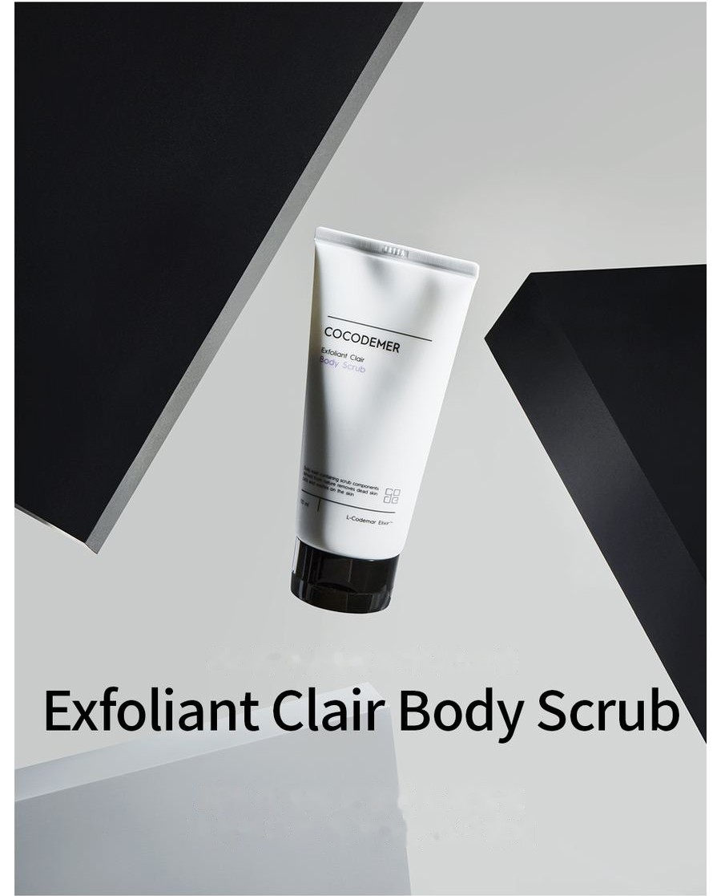
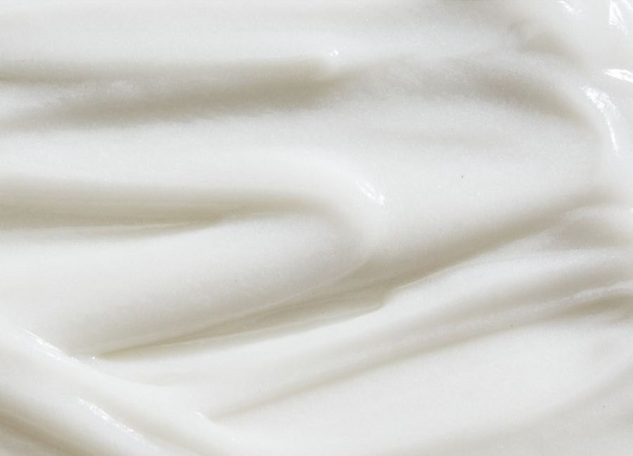
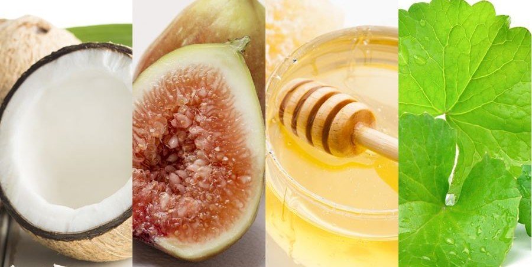
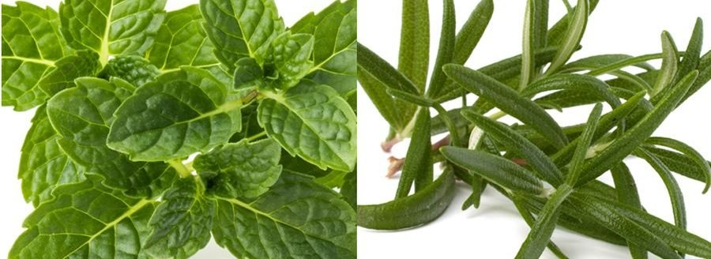

COCODEMER Exfoliant Clair Body Scrub
| Objem | 150ml |
|---|---|
| Vhodné pro | Všechny typy pleti |
| Klíčová technologie | L-CODEMAR ELIXIR™ |
| Výrobce · Odpovědný distributor | JUNGCOS CO., LTD. / COCODEMER CO., LTD. |
Tento produkt vznikl v rámci naší řady kosmetiky na míru. V současné době není v prodeji. S dotazy na opětovnou výrobu nebo obnovu se na nás prosím obraťte prostřednictvím poptávky B2B.

Peeling, který účinně odstraňuje nečistoty včetně odumřelých kožních buněk
Jemná hydratační exfoliace těla s klouzavým roztíráním
Mikrominerální prášek šetrně odstraňuje odumřelé kožní buňky a nečistoty a podráždění udržuje na minimu.
Hydratační a rostlinné složky zklidňují a hydratují a pomáhají udržet pokožku v pohodlí a vláčnou.
Drsnou pokožku zanechává hladkou a zdravě vypadající, jako by byla právě vyleštěná.
Složky zklidňující pokožku — deriváty kyseliny glycyrrhizové, Allantoin, Phytosterols — jsou uzavřeny v liposomech, takže stabilizované exfoliační částice pomáhají udržet pokožku po peelingu hydratovanou.
20 % mikrominerálního prášku vytváří vodový gel, který udržuje exfoliační částice stabilní, takže pomáhají jemně a přesně odstraňovat nahromaděné odumřelé buňky.
* Výše uvedené se týká pouze konkrétní složky.
Kód klíčové účinné látky
- TbZmírnění kožních potížíZmírnění kožních potíží
- HiHydrogenated LecithinKondicionace pleti
- CnCeramide NPPosílení bariéry
- BtBetaineIntenzivní hydratace

Účinně odstraňuje odumřelé buňky z povrchu a nečistoty a zanechává pokožku zářivou.

Ve vodě rozpustné hydratační složky vytvářejí ochranný hydratační závoj, takže pokožka působí hydratovaně i po exfoliaci.

Složky rostlinného původu pomáhají po exfoliaci stáhnout póry a dodávají pokožce vitalitu.
* Výše uvedený text popisuje složky, nikoli hotový produkt.
Zobrazit přehled složky →
L-CODEMAR ELIXIR™
Vlastní technologie COCODEMER.
Naše jedinečná technologie vícevrstvého zapouzdření v nano-gelové emulzi stabilně váže hlavní účinné látky — kokosovou vodu, fytosteroly, 20 aminokyselin a extrakt z medu — do komplexu. Tento komplex je pak zpracován do liposomální formy šetrné k pleti, která napodobuje strukturu samotné pleti, a maximalizuje tak účinnost jejich přenosu do pleti.
L-Codemar Elixir™ posiluje vazby mezi kožními buňkami. Obnovuje poškozenou bariéru a vytváří silný ochranný film, takže hydratace vydrží déle.

Text na obrázku výše
L-CODEMAR ELIXIR™
- KOKOSOVÁ VODA
- MEDOVÝ EXTRAKT
- 20 DRUHŮ AMINOKYSELIN
- FYTOSTEROL

Text na obrázku výše
- Mikroby, jemný prach, žlutý prach, znečišťující látky a znečištění ovzduší
- Nadměrná ztráta vody
Poškozená pleť
Poškozené mezibuněčné lipidy oslabují vazby mezi buňkami epidermis
- Přidané mezibuněčné lipidy ↑
- Účinné látky
- Chrání před vnějším stresem a znečišťujícími látkami
- Menší ztráta vody
Zdravá pleť
Doplněné lipidy obnovují mezibuněčnou matrix → pevnější vazby mezi buňkami
Způsob použití
Na vlhkou pokožku naneste přiměřené množství z dlaně, rozetřete po těle a lehce masírujte, poté důkladně opláchněte vlažnou vodou.
Pouze na tělo. Nepoužívejte prosím na obličej.
Jemná hydratační exfoliace těla s klouzavým roztíráním
Mikrominerální prášek šetrně odstraňuje odumřelé kožní buňky a nečistoty a podráždění udržuje na minimu.
Hydratační a rostlinné složky zklidňují a hydratují a pomáhají udržet pokožku v pohodlí a vláčnou.
Drsnou pokožku zanechává hladkou a zdravě vypadající, jako by byla právě vyleštěná.
Složky zklidňující pokožku — deriváty kyseliny glycyrrhizové, Allantoin, Phytosterols — jsou uzavřeny v liposomech, takže stabilizované exfoliační částice pomáhají udržet pokožku po peelingu hydratovanou.
20 % mikrominerálního prášku vytváří vodový gel, který udržuje exfoliační částice stabilní, takže pomáhají jemně a přesně odstraňovat nahromaděné odumřelé buňky.
Účinně odstraňuje odumřelé buňky z povrchu a nečistoty a zanechává pokožku zářivou.
Ve vodě rozpustné hydratační složky vytvářejí ochranný hydratační závoj, takže pokožka působí hydratovaně i po exfoliaci.
Složky rostlinného původu pomáhají po exfoliaci stáhnout póry a dodávají pokožce vitalitu.
* Výše uvedený text popisuje složky, nikoli hotový produkt.
L-CODEMAR ELIXIR™
Vlastní technologie COCODEMER. Naše jedinečná technologie vícevrstvého zapouzdření v nano-gelové emulzi stabilně váže hlavní účinné látky — kokosovou vodu, fytosteroly, 20 aminokyselin a extrakt z medu — do komplexu. Tento komplex je pak zpracován do liposomální formy šetrné k pleti, která napodobuje strukturu samotné pleti, a maximalizuje tak účinnost jejich přenosu do pleti. L-Codemar Elixir™ posiluje vazby mezi kožními buňkami. Obnovuje poškozenou bariéru a vytváří silný ochranný film, takže hydratace vydrží déle.
Na vlhkou pokožku naneste přiměřené množství z dlaně, rozetřete po těle a lehce masírujte, poté důkladně opláchněte vlažnou vodou. * Pouze na tělo. Nepoužívejte prosím na obličej.
| Jmenovitý obsah (objem nebo hmotnost) | 150ml |
|---|---|
| Vhodné pro | Všechny typy pleti |
| Minimální trvanlivost / doba použitelnosti po otevření | 30 měsíců od data výroby; po otevření spotřebujte do 12 měsíců |
| Způsob použití | Na vlhké pokožce rozetřete po těle malé množství a lehce masírujte, poté důkladně opláchněte vlažnou vodou. * Pouze na tělo. Nepoužívejte na obličej. |
| Výrobce kosmetiky | JUNGCOS CO., LTD. |
| Odpovědný distributor | COCODEMER CO., LTD. |
| Země původu | Korejská republika |
| Úplné složení (INCI) | Cocos Nucifera (Coconut) Water, Alumina, Glycerin, Methylpropanediol, Water, 1,2-Hexanediol, Butylene Glycol, Centella Asiatica Extract, Ficus Carica (Fig) Fruit Extract, Honey Extract, Mentha Piperita (Peppermint) Leaf Extract, Mentha Suaveolens Leaf Extract, Rosmarinus Officinalis (Rosemary) Leaf Extract, Salvia Officinalis (Sage) Leaf Extract, Carthamus Tinctorius (Safflower) Seed Oil, Hydrogenated Lecithin, Oenothera Biennis (Evening Primrose) Oil, Alanine, Allantoin, Arginine, Aspartic Acid, Carbomer, Carnitine, Ceramide NP, Cetearyl Alcohol, Cetyl Ethylhexanoate, Citrulline, Dipotassium Glycyrrhizate, Disodium EDTA, Ethylhexylglycerin, Glutamic Acid, Glutamine, Glyceryl Polymethacrylate, Glycine, Hydrogenated Phosphatidylcholine, Isoleucine, Leucine, Magnesium Aluminum, Silicate, Methionine, Myristic Acid, Neopentyl Glycol Diheptanoate, Ornithine, Palmitic Acid, Phenylalanine, Phytosterols, Polyglyceryl-10 Myristate, Polyglyceryl-2 Stearate, Polyquaternium-51, Proline, Serine, Squalane, Stearic Acid, Styrene/Acrylates Copolymer, Threonine, Tromethamine, Tryptophan, Tyrosine, Valine, Xanthan Gum, Fragrance (Parfum) |
| Schválení funkční kosmetiky | Neuplatňuje se |
| Upozornění | 1. Pokud se na ošetřeném místě během používání nebo po něm, případně po vystavení přímému slunečnímu záření, objeví červené skvrny, otok, svědění nebo jiné neobvyklé reakce či nežádoucí účinky, poraďte se s odborníkem. 2. Vyhněte se použití na porušenou nebo poškozenou pokožku. 3. Upozornění pro skladování a zacházení a) Uchovávejte mimo dosah dětí. b) Chraňte před přímým slunečním zářením. c) Pokud se částice dostanou do očí, vypláchněte je vodou, a pokud se objeví jakékoli potíže, poraďte se s odborníkem. |
| Záruka kvality | V případě vady se náhrada poskytuje v souladu se Standardy pro řešení spotřebitelských sporů vydanými korejským Úřadem pro hospodářskou soutěž (Korea Fair Trade Commission). |
| Dotazy zákazníků | 010-3307-9341 / cocodemer@cocodemer.co.kr |
* Povinné údaje podle korejských předpisů o označování a reklamě kosmetických přípravků. Jedná se o referenční překlad; certifikované prohlášení o složení, CPSR nebo CoA si vyžádejte prostřednictvím poptávky B2B.